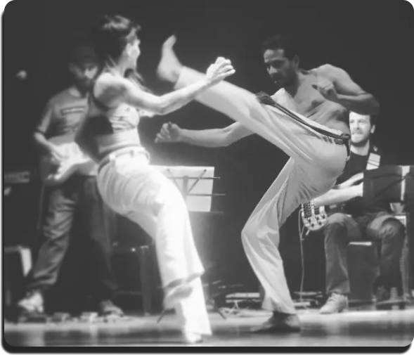

Clases de Capoeira Brasil dictadas en Dandara Espacio, República Argentina 710, Unquillo, Córdoba. Entrenamientos en practicas de la Gimba y el Jogo en la Roda. Instrumentación de Ritmos Afrodescendientes.
Practicante de la Capoeira desde el (completar), forma parte del grupo GCB Argentina y da clases desde el (). Organiza eventos en la región.

Alrededor del S.XVI, son llevados a Brasil una masiva cantidad de esclavos negros procedentes de todos los lugares en los que Portugal tenía colonias (Angola, Congo, Guinea etc…) estos esclavos eran transportados en los llamados “navíos negreiros”, y la causa de tal movilización de esclavos, fue la necesidad de personas que realizaran la cosecha de caña de azúcar.
Fue en las “Senzalas” (Lugar en el que vivían y dormían los esclavos) donde se produjeron las primeras manifestaciones de capoeira ante la necesidad de libertad que tenían estos esclavos, empezaron ocultando la lucha en bailes, para que los vigilantes no se la prohibieran. Una de las leyendas existentes afirma que fueron mezclando movimientos que veían en animales con la malicia que observaban de los blancos. Aplicando esta forma de lucha los esclavos provocaron muchas revoluciones en las que intentaban escapar, y algunos lo conseguían. Al escapar, éstos se organizaban en “Quilombos”, que eran comunidades de esclavos fugitivos situadas en lugares de difícil acceso, donde se seguía practicando capoeira.
Tiempo después, los blancos fueron desarticulando todos los quilombos existentes, incluído el de Palmares, el más grande, que constituía prácticamente una ciudad africana. Es por ello que los negros (antes esclavos) permanecieran libres, como los esclavos que habían sido liberados hace mucho tiempo, y se fueran a las ciudades. Es ahí donde no tardaron en organizarse en grupos denominados maltas (a la formación de éstas, aparte de los negros que residían libres en las ciudades, ayudó la abolición de la esclavitud, lo que hizo que muchos de los antes esclavos, se unieran a las maltas), que se dedicaban a provocar disputas en fiestas populares y demás eventos públicos, además de la constante lucha y rivalidad que existía entre ellas. Ésto fue reforzando el carácter marginal de esta lucha, lo que hizo que su simple práctica se prohibiera. Las maltas eran utilizadas por las mafias y existían en la clandestinidad.
El año 1831 estuvo marcado por las temibles hazañas de las maltas y los capoeiristas; éstos eran incluso contratados por políticos para la extorsión. Hasta entonces la ley castigaba la práctica de la capoeira con 300 azotes y el calabozo, pero el mayor auge de la represión sobrevino cuando, en 1890, queda instituida la deportación de los que practicaban capoeira a la isla “Fernando de Noronha”.
Las maltas fueron desorganizadas en Bahía cuando se convocó la guerra de Paraguay en 1864, mientras que las de Recife solo acabaron finalmente cuando el juego volvió a ser “brincadeira” (para diversión), alrededor de 1912.
De 1890 a 1937 , la capoeira fue considerada crimen inscrito en el código penal de la república; la simple práctica de algún movimiento de capoeira en la calle daba hasta 3 meses de prisión.
Fue por eso , por la visión marginal que se tenía de la capoeira y por la entrada de las artes marciales asiáticas en todo el mundo, por lo que Manoel Dos Reis Machado -Mestre Bimba- crea la capoeira regional, para salvar la reputación de la capoeira y para combatir la moda de la práctica de artes marciales asiáticas. Con la creación de la capoeira regional intenta crear en la capoeira un ambiente mas deportivo, quitándole la malicia y praticándola como método de mejora para la salud física y psiquica.
En 1953 el gobierno que entonces mandaba en Brasil “liberaliza” la capoeira, después de ver una exhibición en palacio, y la consideran como “deporte genuinamente brasileño” (según Geúlio Vargas, el entonces presidente). Es así como todas las manifestaciones de cultura afro-brasileñas, resurgen de la marginación y como la capoeira toma 2 caminos o vertientes : - Angola (capoeira mas antigua, con mucha malicia, cuyo máximo representante fue Mestre PASTINHA) - Regional (capoeira deportiva, festiva, acrobática, cuyo creador fue Mestre BIMBA).